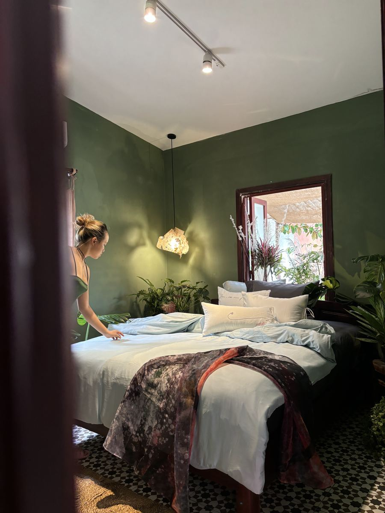
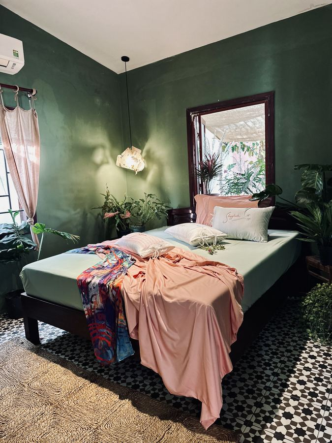
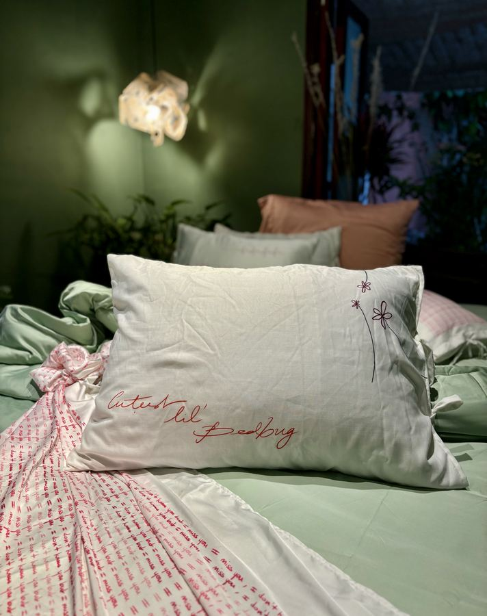
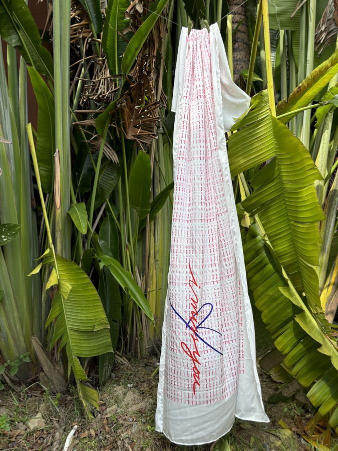
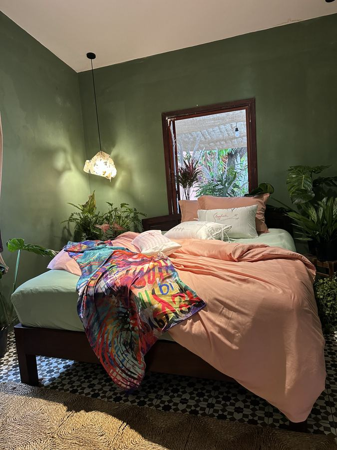
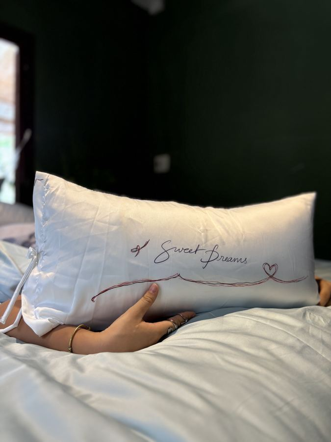
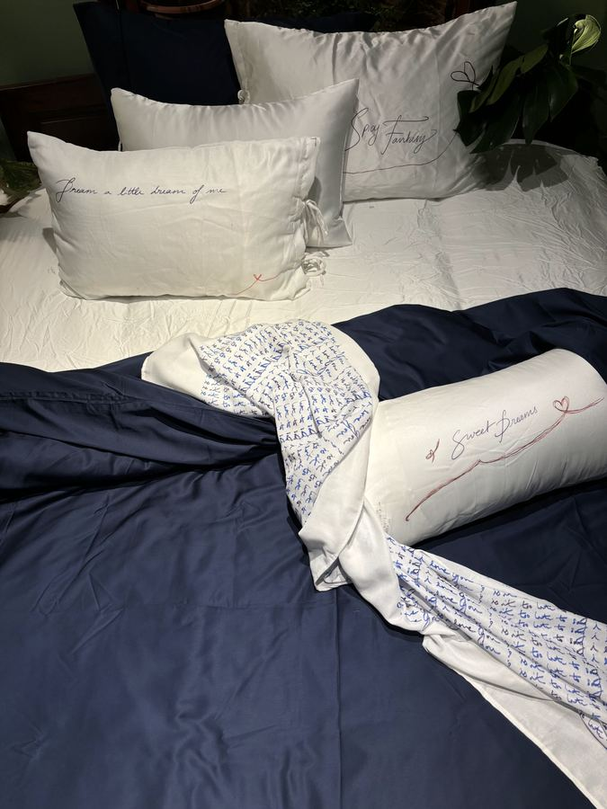
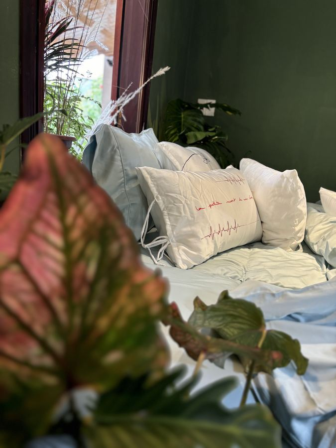

Trang chủ / Mô Bedding kể chuyện
Chuyện kể bên gối.
Những câu chuyện nhỏ, viết từ ký ức thật — về chiếc giường, giấc ngủ và những người mình thương. Mỗi tuần Mô kể thêm hai chuyện.

Making bed
Making bed — gọi bằng tiếng Việt là gì?

Chuyện của Mô
Năm phút cho “người tình” ga gối

Chuyện của Mô
Chiếc gối thêu tay

Chăm sóc
Giặt lụa tre sao cho mềm mãi

Chuyện của Mô
Chiếc giường chưa dọn của bạn thân

Chuyện của Mô
Khi chăn gối đủ mềm

Making bed
Xếp gối như một boutique hotel
Chăm sóc
Giữ ga gối thơm tho qua mùa nồm

Chất liệu